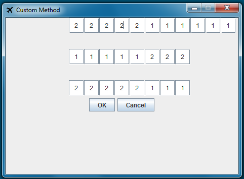

To create your own seating method first you need to load a plane dimension into the program. Once you have either created your own plane dimension or loaded one from file, press on the custom seating method button. You will be presented with the folowing screeen.

The text boxes represent the seats on your loaded plane. To create your plane dimension you can input integers from 1 to infinity into these boxes. If a group of seats are set to the same number these seats will be randomised together. The highest priority for a seat to be is 1.
Once you have created the custom order and pressed okay. To use the custom order for the program you have to tick the check box 'Use Custom?'
Once a custom seating method has been created you can 'Edit' or 'Save' the method from the main menu.